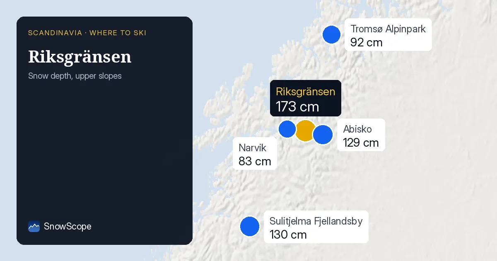

Riksgränsen 173 cm leads Scandinavia by commanding margin
Riksgränsen stands alone at the top of Scandinavia's snow depth rankings this week, with 173 centimetres accumulated at its upper slopes. The gap to the second-placed resort is substantial: more than 40 centimetres separates the leader from Sulitjelma Fjellandsby, underscoring how much more water this area of Swedish-Norwegian terrain is holding in its early-season snowpack.
See the live snow forecast for Riksgränsen in the SnowScope appSnow depth, powder alerts and the 3D map, free.
Water storage in the vertical profile
The water held in Riksgränsen's snowpack is vertically distributed in a way typical of November accumulation at this latitude. At the base elevation of 516 metres, our model estimates just 22 centimetres—a thin layer easily affected by melt or refreezing. The mid-elevations, around 708 metres, show 50 centimetres; here the snow becomes more stable and persistent. The upper slopes at 900 metres carry the heaviest burden of accumulated precipitation, with 88 centimetres recorded in the latest modelled data. This vertical gradient reflects how higher terrain captures more precipitation and maintains colder conditions longer as autumn turns to winter.
| Resort | Snow depth | New snow, 72 h | Coming, next days | Top |
|---|---|---|---|---|
| Riksgränsen | 173 cm | 4 cm | 5 cm | 900 m |
| Sulitjelma Fjellandsby | 130 cm | 10 cm | 3 cm | 542 m |
| Abisko | 129 cm | 3 cm | 12 cm | 902 m |
| Tromsø Alpinpark | 92 cm | 8 cm | 4 cm | – |
| Narvik | 83 cm | 5 cm | 0 cm | – |

How Riksgränsen compares to its nearest rivals
Sulitjelma Fjellandsby, in second place, holds 130 centimetres on its upper slopes—43 centimetres less than Riksgränsen. Despite this deficit, Sulitjelma's mid-elevations (465 metres) are storing more water relative to seasonal norms: our model shows 59 centimetres there, compared with a typical 51 centimetres for mid-November. Abisko ranks third at 129 centimetres on upper terrain, but the picture is starkly different across its elevation range: at base level only 7 centimetres exist, and at mid-height just 11 centimetres. Abisko is storing less water per square metre of slope area than any of these three leaders. Tromsø Alpinpark and Narvik, further south and west, show 92 and 83 centimetres respectively—meaningful accumulation, yet well below the top tier.
The region's shrinking snow cover
Across Scandinavia as a whole, snow-covered area has contracted over the past two days. On 14 November, 859,160 square kilometres bore snow; by yesterday (16 November), that figure had fallen to 729,380 square kilometres. This decline reflects early-season variability—autumn temperatures are still marginal at many elevations, and the boundary between snow and rain shifts day to day. By 19 November, the forecast suggests partial recovery to 838,270 square kilometres, as colder air and fresh precipitation push southward. The slight shrinkage is not unusual at this stage, though it reminds us that early November snow is fragile and often patchy: rocks and thin ground protrude through, and melt or sublimation can be rapid if conditions warm.
Measurement against the past
Riksgränsen at mid-height (708 metres) is holding 46 centimetres by our model, which is 11 centimetres below the typical depth of 57 centimetres recorded for mid-November in past years. That said, this year's accumulation ranks deeper than the same measurement in 12 of the past 46 seasons—placing it comfortably in the upper half of the historical range. Sulitjelma's mid-elevations perform better: 59 centimetres beats the typical 51 centimetres and exceeds 33 of the past 46 years on record. At weather stations, measurement precision is higher but the picture is local: Lyngen Gjerdvassbu at 710 metres recorded 44 centimetres on 16 November, in reasonable agreement with model estimates in that zone. Early-season snow depth forecasts are inherently uncertain because thin patches mean station data can misrepresent slopes a few kilometres away.
What comes next
Over the next three days, Abisko will receive the most new snow—our model forecasts 12 centimetres through 19 November, mostly arriving on 18 November when a frontal system pushes across the region. Riksgränsen will gain just 5 centimetres, and Sulitjelma 3 centimetres. If this pattern holds, the gap between Riksgränsen and its rivals will narrow slightly, but the leader should retain its commanding margin. Freezing levels will fluctuate: in Riksgränsen's zone, levels will rise sharply on 18 November before stabilising, potentially affecting the wetness of new snow at the base. Skiers and water managers alike should note that early-season snow is best interpreted as a snapshot of water content at one moment, not a prediction of April reservoir levels.
Tips for skiers
- Riksgränsen's upper elevations offer the most stable snow of the season so far; seek slopes above 800 metres to minimise exposure to thin base layers.
- Consult the latest avalanche bulletin before entering off-piste terrain; early-season consolidation is incomplete.
- Sulitjelma's mid-heights hold proportionally deeper snow relative to seasonal norms; this may offer good early-season skiing.
- In November, sun exposure and slope orientation matter more than later in the season—north-facing terrain above 700 metres is your best bet in this region.
- Monitor the 18 November forecast closely, particularly if you are planning to ski Abisko; fresh snow of that magnitude could transform stability rapidly.
About these numbers
Resort snow depths are the deepest snow on the resort's upper slopes from the SnowScope snow model (about 1 km, run of 16 November); they are estimates for an area, not a measurement at one point. Station values are measurements on the date shown. Forecasts can change. Always read the official avalanche bulletin before going off-piste.
Cite this report
For research, teaching or the press: the numbers and charts are free to reuse under CC BY 4.0 with this citation.
SnowScope (2026), Riksgränsen 173 cm leads Scandinavia by commanding margin, https://snowscope.app/blog/en/2026/11/scandinavia-riksgransen-snow-depth-today-16-november-2026.html, accessed 2026-11-16
SnowScope (Atlas Labs). (2026, November 16). Riksgränsen 173 cm leads Scandinavia by commanding margin. SnowScope snow reports. https://snowscope.app/blog/en/2026/11/scandinavia-riksgransen-snow-depth-today-16-november-2026.html
BibTeX
@misc{snowscope2026scandinaviariksgransensn,
author = {{SnowScope (Atlas Labs)}},
title = {Riksgränsen 173 cm leads Scandinavia by commanding margin},
year = {2026},
month = nov,
howpublished = {\url{https://snowscope.app/blog/en/2026/11/scandinavia-riksgransen-snow-depth-today-16-november-2026.html}},
note = {Published 2026-11-16 20:42 UTC; accessed 2026-11-16}
}· CC BY 4.0 · Methods, data and tools →
Riksgränsen: snow and temperature by height, this winter vs last (tools) →
Follow Riksgränsen
Free: a message when fresh snow is coming, and the forecast every morning.
More snow reports

On 13 November 2026 the weather stations in Stockholm and Helsinki measured 0 cm of snow while Sälen had 45 cm and Umeå 20 cm. Height, the sea, the city and the track of the storms explain it, with numbers from 46 past winters.

Warm weather on 16 November removed 1290 km2 of UK snow cover. The snow line is now at 800 metres; fresh snow arrives tomorrow.

Spain's snow-covered area fell to 310 km² on 16 November. Only 6 of 31 resorts have skiable snow, led by Aramón Cerler at 17 cm.